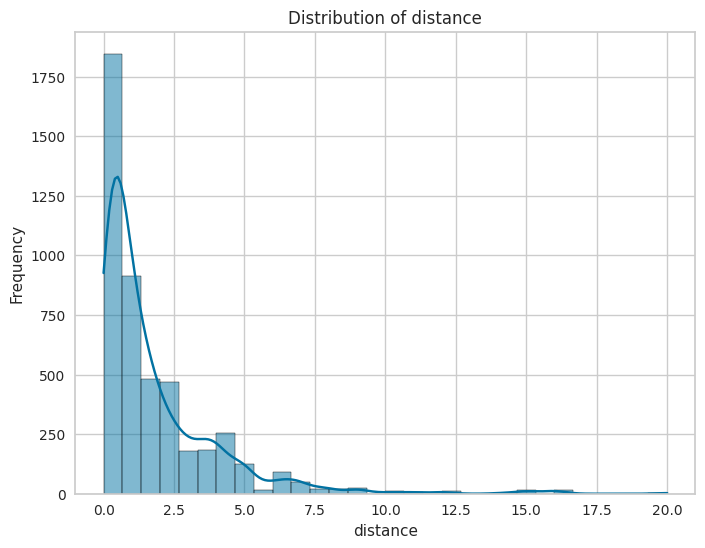
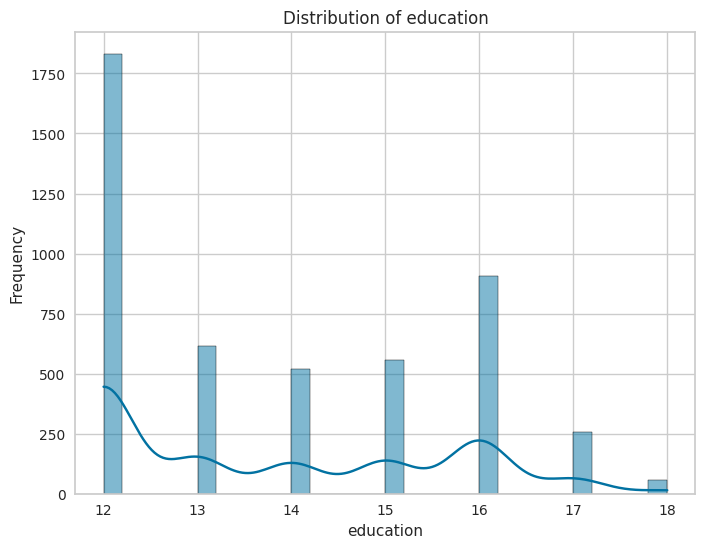
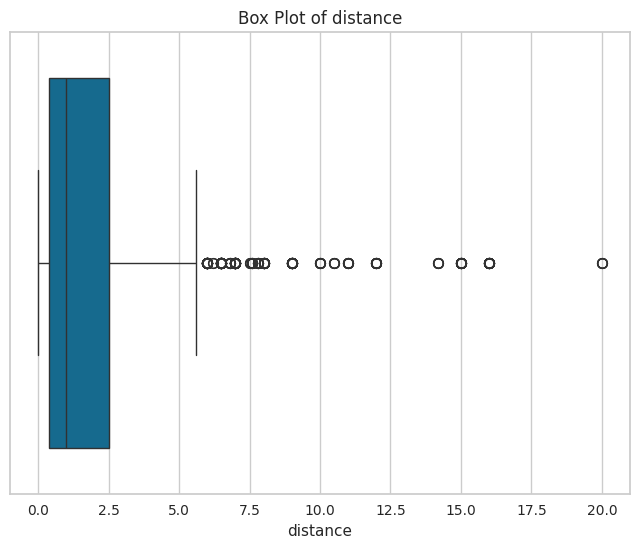
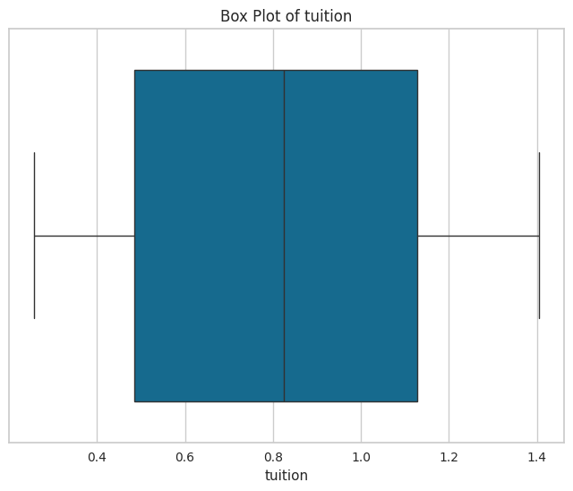

Data explore on College Distance dataset
Introduction
Given the dataset with cross-section data from the High School and Beyond survey conducted by the Department of Education (USA) in 1980, with a follow-up in 1986. The survey included students from approximately 1,100 high schools.
The goal is to create an ML model that will predict the base year composite tets score or just the score feature in
the dataset.
Details
All given information comes from this page
Rouse (1995) computed years of education by assigning 12 years to all members of the senior class. Each additional year of secondary education counted as a one year. Students with vocational degrees were assigned 13 years, AA degrees were assigned 14 years, BA degrees were assigned 16 years, those with some graduate education were assigned 17 years, and those with a graduate degree were assigned 18 years.
Stock and Watson (2007) provide separate data files for the students from Western states and the remaining students. CollegeDistance includes both data sets, subsets are easily obtained (see also examples).
Source
Online complements to Stock and Watson (2007).
References
Rouse, C.E. (1995). Democratization or Diversion? The Effect of Community Colleges on Educational Attainment. Journal of Business & Economic Statistics, 12, 217–224.
Stock, J.H. and Watson, M.W. (2007). Introduction to Econometrics, 2nd ed. Boston: Addison Wesley.
Data format
A data frame containing 4739 observations based on 14 variables (15 including rownames feature).
Features explained:
gender: factor indicating gender.- Type: categorical
- Possible values:
femaleormale.
ethnicity: factor indicating ethnicity.- Type: categorical
- Possible values:
afam(African-American),hispanicorother.
score: base year composite test score. These are achievement tests given to high school seniors in the sample.- Type:
float - Possible values: non-negative floating point number.
- Type:
fcollege: factor. Is the father a college graduate?- Type: categorical
- Possible values:
yesorno.
mcollege: factor. Is the mother a college graduate?- Type: categorical
- Possible values:
yesorno.
home: factor. Does the family own their home?- Type: categorical
- Possible values:
yesorno.
urban: factor. Is the school in an urban area?- Type: categorical
- Possible values:
yesorno.
unemp: county unemployment rate in 1980.- Type:
float - Possible values: non-negative floating point number.
- Type:
wage: state hourly wage in manufacturing in 1980.- Type:
float - Possible values: non-negative floating point number.
- Type:
distance: distance from 4-year college (in 10 miles).- Type:
float - Possible values: non-negative floating point number.
- Type:
tuition: average state 4-year college tuition (in 1000 USD).- Type: float
- Possible values: non-negative floating point number.
education: number of years of education.- Type:
int - Possible values: non-negative integer.
- Type:
income: factor. Is the family income above USD 25,000 per year?- Type: categorical
- Possible values:
loworhigh.
region: factor indicating region.- Type: categorical
- Possible values:
westorother.
First look at the data
| rownames | gender | ethnicity | score | fcollege | mcollege | home | urban | unemp | wage | distance | tuition | education | income | region |
|---|---|---|---|---|---|---|---|---|---|---|---|---|---|---|
| 1 | male | other | 39.150001525878906 | yes | no | yes | yes | 6.199999809265137 | 8.09000015258789 | 0.20000000298023224 | 0.8891500234603882 | 12 | high | other |
| 2 | female | other | 48.869998931884766 | no | no | yes | yes | 6.199999809265137 | 8.09000015258789 | 0.20000000298023224 | 0.8891500234603882 | 12 | low | other |
| 3 | male | other | 48.7400016784668 | no | no | yes | yes | 6.199999809265137 | 8.09000015258789 | 0.20000000298023224 | 0.8891500234603882 | 12 | low | other |
| 4 | male | afam | 40.400001525878906 | no | no | yes | yes | 6.199999809265137 | 8.09000015258789 | 0.20000000298023224 | 0.8891500234603882 | 12 | low | other |
| 5 | female | other | 40.47999954223633 | no | no | no | yes | 5.599999904632568 | 8.09000015258789 | 0.4000000059604645 | 0.8891500234603882 | 13 | low | other |
Amount of empty cells:
rownames 0
gender 0
ethnicity 0
score 0
fcollege 0
mcollege 0
home 0
urban 0
unemp 0
wage 0
distance 0
tuition 0
education 0
income 0
region 0
Dataset contains no empty or null cells.
Distributions of the features
Plot with distribution of distances feature

Plot with distribution of education feature

Plot with distribution of score feature
Plot with distribution of tuition feature
Plot with distribution of unemp feature
Plot with distribution of wage feature
Box plots of the features
Box plot of the distance feature

Box plot of the education feature
Box plot of the score feature
Box plot of the tuition feature

Box plot of the unemp feature
Box plot of the wage feature
Note
Statistics of the rownames feature is missing because it only represents index of the row. Therefore, it is safe to drop this feature in this project.